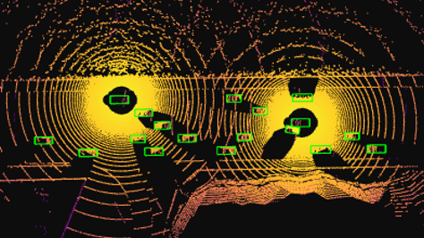
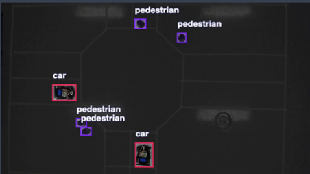
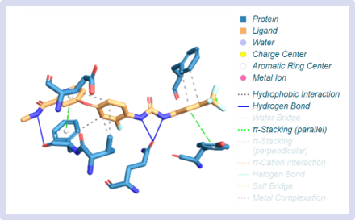
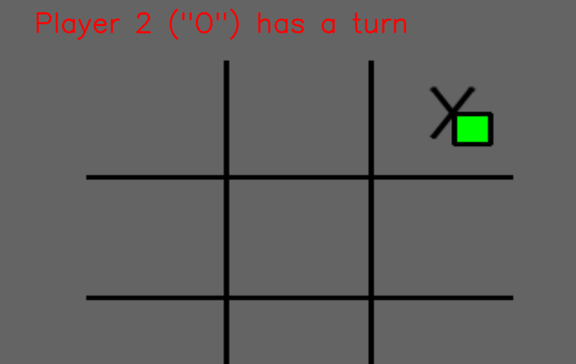

Portfolio
Here are some of the past research projects I have been a part of.
-
LiDAR Point Cloud Alignment Research
This is the code for a research I conducted with Dr. Lixing Song at Rose-Hulman Insitute of Technology regarding alignment for autonmous vehicles.
-
Autonomous Vehicle Research
This is the code for a research project I conducted during the summer of 2023 at Houghton University titled "Intersection Traffic Automation for Vehicles".
-
Biochemistry Research
A sample of the tools I made for molecular docking simulations and mass spectroscopy analysis while working with an Alzheimer's research team at Houghton University.
-
Controller-less Video Games
This repository contains the code Joshua Kho and I wrote for a class I took in Computer vision research at Houghton University.